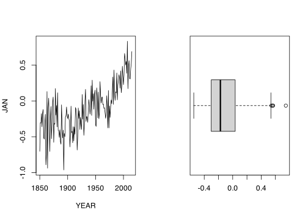

Kód
"Správně"
"Špatně'Základy jazyka jsou vyučovány již v prvním semestru studia Vodního hospodářství. Na tomto místě je pouze zhuštěný přehled funkcionality z uvedeného kurzu.
Zadává se do konzole ve tvaru help(<jméno funkce>), nebo <jmeno funkce>. Pokud bychom se chtěli podívat přímo do kódu funkce, také je to možné, jméno funkce pouze vepíšeme do konzole bez závorek, případně použijeme příkazu View(<jmeno funkce>). Kromě toho existuje v R také help.search(<jméno funkce>) pod zkratkou ??, jež hledá fulltextovou nápovědu napříč nainstalovanými balíčky. Dále je ještě možné prohledat mailing list jazyka R pomocí funkce RSiteSearch(), která otevře nové okno předdefinovaného prohlížeče. Dále jsou velmi užitečné tematicky ucelené karty nápověd: ?Logical, ?Constants, ?Control, ?Arithmetic, ?Syntax, ?Special a další.
DateTimeClasses.POSIXct a POSIXlt?Objekty, které vznikají při práci s R musí splňovat následující jmenné konvence. Název objektu nelze začínat číslovkou nebo operátorem, nesmít být totžný s žádným klíčovým slovem, obsahovat mezeru.
if, else, repeat, while, function, for, in, next, repeat, break, TRUE, FALSE, NULL, Inf, NaN, NA, NA_integer_, NA_real_, NA_complex_, NA_character_, a speciální znak: _
Nedoporučuje se vkládat do názvu proměnné tečku, např. morava.prutoky, a pojmenovávat shodně s běžně používanou funkcí. R je “case-sensitive” jazyk tzn., že proměnná X se nerovná x.
data. Je to chybný postup, neboť data() je funkce zpřístupňující datové sady, kterou jsou součástí instalace. Vyzkoušejte.aaa, Morávka průtok [m/s], moje.proměnná
Žádné z těchto jmen proměnných není proti
Představují párové znaky jazyka R. Závorky se používají trojího typu: kulaté, hranaté a složené a všechny mají jasně vymezné pole působnosti.
() se používají vždy se jménem funkce a uvozují prostor ve kterém se parametrizují argumenty funkce.[] se vždy pojí se jménem objektu (vektoru, pole, listu, …) a vymezují výběr z daného objektu.{} ohraničují blok kódu, který se má vykonat v celku.Uvozovky uvozují textové řetězce. Lze používat jak dvojté " tak jednoduché ' uvozovky zcela zástupně, je pouze třeba uzavírat shodným typem. Hojně se lze setkat se zpětnými uvozovkami, které se například použijí pro ohraničení nestandardního názvu sloupce ve struktuře.
"Správně"
"Špatně'+?Rozlišujeme operátory aritmetické, relační, přiřazení a patří sem i množinové funkce.
| Znak | Význam |
|---|---|
+ , - , * , / , %% , %/% , ** nebo ^, %*% |
aritmetické operátory (sčítání, odčítání, násobení, dělení, modulo, celočíselné dělení, mocnění a maticové násobení) |
> ,>= , < , <= , == , != |
relační operátory (větší/menžší než, rovno, nerovno) |
! , & , && , | , || |
logické (ne, a soužasně, zdvojené po prvcích vektoru) |
~ |
zadání funkčního vztahu |
<- , =, <<-, -> |
operátory přiřazení |
$ |
jmenný index v heterogenních strukturách |
: |
rozsah |
isTRUE() , all() , any() , %in% , setdiff() |
množinové funkce |
xor(x)
isTRUE(x)
any()
all()
%in%
setdiff(x, y)| Funkce | Význam |
|---|---|
log(x) |
logaritmus \(x\) o základu \(e\) |
exp(x) |
odlogaritmování \(x(e^x)\) |
log(x, n) |
logaritmus \(x\) o základu \(n\) |
log10(x) |
logaritmus \(x\) o základu \(10\) |
sqrt(x) |
druhá odmocnina z \(x\) |
factorial(x) |
\(x!\) |
choose(n, x) |
binomické koeficienty \[ \binom{n}{k} = \frac{n!}{k!(n-k)!} \] |
ceiling(x) |
nejmenší celé číslo větší než \(x\) |
floor(x) |
největší celé číslo před \(x\) |
trunc(x) |
nejbliřší celé číslo mez i\(x\) a 0 |
round(x, digits) |
zaokrouhlení \(x\) na \(n\) desetinných míst |
signif(x, digits) |
zaokrouhlení na počet platných číslic |
cos(x) , sin(x) , tan(x) |
funkce kosinus, sinus, tangens v radianech |
acos(x) , asin(x) , atan(x) |
inverzní trigonometrické funkce |
abs(x) |
absolutní hodnota |
Tvoří prvky struktur. R je dynamicky typovaný jazyk, nepožaduje před zavedením proměnné její deklaraci.
| logical | integer | numeric | complex | character | |
|---|---|---|---|---|---|
| logical | logical |
integer |
numeric |
complex |
character |
| integer | logical |
integer |
numeric |
complex |
character |
| numeric | logical |
numeric |
numeric |
complex |
character |
| complex | logical |
integer + warning |
numeric + warning |
complex |
character |
| character | NA_logical |
NA_integer + warning |
NA_numeric + warning |
NA_complex + warning |
character |
K datovým typům (třídám) se pojí funkce is.___ a as.___ kteří slouží k dotazování na typ, resp. jeho nucenou změnu a dále funkce class(), mode() .
is.character("ABC")[1] TRUEas.integer(11 + 1i)Warning: imaginary parts discarded in coercion[1] 11Základní datové struktury rozlišujeme na atomické (homogenní) a heterogenní datové struktury.
Homogenní datové struktury obsahují atomické vektory, faktory, matice a pole. Název je odvozen od jejich omezení v podvýběru obsahovat pouze typ sebe sama tzn. podvýběr matice může být opět pouze matice.
vectorVektor je v jazyce R základní stavební strukturou, nic jaká skalární veličina zde není. Koncept vektoru je zde chápán v matematickém smyslu jako vektor hodnot, reprezentující bod v \(n-\)dimenzionálním prostoru.
\[ \mathbf{\mathrm{u}} = \begin{pmatrix} 1\\ 1.5\\ -14\\ 7.223\\ \end{pmatrix}, \qquad \mathbf{\mathrm{v}} = \begin{pmatrix} \mathrm{TRUE}\\ \mathrm{FALSE}\\ \mathrm{TRUE}\\ \mathrm{TRUE}\\ \end{pmatrix}, \qquad \mathbf{\mathrm{u^T}} = \begin{pmatrix} 1 & 1.5 & -14 & 7.233\\ \end{pmatrix} \]
Může nabývat jakéhokoliv datového typu, nicméně všechny prvky v daném vektoru jsou právě jednoho typu, čímž rozumíme, že je tato struktura tzv. homogenní. Vektor je možné vytvořit mnoha způsoby, mezi nejčastější patří funkce vector(mode = "numeric", length = 10) a funkce c(), případně vzniká pomocí opetárorů [ nebo [[.
S vektory se pojí důležité pravidlo - recyklace hodnot.
v <- c(1.4, 2.0, 6.1, 2.7)
u <- c(2.0, 1.3)
u + v
u * v
u * 2.3[1] 3.4 3.3 8.1 4.0
[1] 2.80 2.60 12.20 3.51
[1] 4.60 2.99x <- 1:10
x <- seq(10:1)
x <- vector(mode = "numeric", length = 10)
x <- replicate(n = 10, expr = eval(2))
x <- sample(x = 10, size = 10, replace = TRUE)
x <- rep(x = 15, times = 2)
x <- rnorm(n = 10, mean = 2, sd = 20)
t(x) * x
names(x) <- LETTERS[1:length(x)]
x[x > 0]
x[1:3] [,1] [,2] [,3] [,4] [,5] [,6] [,7] [,8]
[1,] 5.124613 411.5064 158.136 69.01407 198.7767 924.8587 1085.05 955.1436
[,9] [,10]
[1,] 1245.72 1326.243
A B D F G H J
2.263761 20.285620 8.307471 30.411489 32.940102 30.905397 36.417615
A B C
2.263761 20.285620 -12.575213 x 10 různých číselných hodnot, kde \(x\in\mathbb{R}\).Faktorem rozumíme kategorickou proměnnou, která je určena výčtem hodnot. Ukážeme si na příkladu “tříd přesnosti měření”.
trida <- factor(x = 1:4,
labels = c(paste(1:4, ". třída", sep = "")),
ordered = TRUE)matrixRozšířením rozměrů vektoru vznikne matice nebo obecně pole.
x <- c(1:10)
dim(x) <- c(2, 5)
x [,1] [,2] [,3] [,4] [,5]
[1,] 1 3 5 7 9
[2,] 2 4 6 8 10| Funkce | Úkon |
|---|---|
nrow(), ncol() |
počet řádků, sloupců matice |
dim() |
řádky \(\times\) sloupce matice |
det() |
deteminant matice |
eigen() |
vlastní čísla a vlastní vektory matice |
colnames() |
jména sloupců v matici |
rowSums() |
řádkové součty matice |
colMeans() |
sloupcové průměry matice |
M[m, ] |
Výběr \(m\)-tého řádku matice |
M[ ,n] |
Výběr \(n\)-tého sloupce matice |
Stejně jako u vektoru opět platí typová homogenita
B <- matrix(
data = c(1, 2 + 3i, 5.4, 4, 5),
nrow = 2,
ncol = 3)Warning in matrix(data = c(1, 2 + (0+3i), 5.4, 4, 5), nrow = 2, ncol = 3): data
length [5] is not a sub-multiple or multiple of the number of rows [2]A <- matrix(data = seq(from = 1, to = 16, by = 2), nrow = 4)
str(A)
dim(A)
svd(A)
diag(A)
# sweep(x = A, MARGIN = 1, STATS = mean)
## num [1:4, 1:2] 1 3 5 7 9 11 13 15
## [1] 4 2
## $d
## [1] 25.930394 2.759471
##
## $u
## [,1] [,2]
## [1,] -0.3396065 -0.7646355
## [2,] -0.4383147 -0.3284512
## [3,] -0.5370229 0.1077330
## [4,] -0.6357311 0.5439173
##
## $v
## [,1] [,2]
## [1,] -0.3389761 0.9407950
## [2,] -0.9407950 -0.3389761
##
## [1] 1 11rnorm() vytvořte matici \(\boldsymbol{\mathrm{M}}; h(\boldsymbol{\mathrm{M}}) = 8\) náhodných čísel.seq().TRUE/FALSE vytvořte matici \(\boldsymbol{\mathrm{M}}(3,3)\), změňte typ prvku na pozici \(\boldsymbol{\mathrm{M}}[1, 1]\) na textový řetězec. Ovlivní tato změna ostatní prvky v matici?Za rúznorodé struktury se označují ty, které mohou uchovávat dva a více prvků rozdílného typu současně. Z těch základních to jsou data.frame a list, dále pak S4, nebo R6 třídy, případně další uživatelem vytvořené struktury.
data.framedata.frame je de facto vektor stejně dlouhých vektorů, které kromě toho, že musí být shodné délky, mohou být vzájmeně rozdílného datového typu.
DF <- data.frame(name = letters[1:5],
value = rnorm(5))
DF
## name value
## 1 a 0.3814827
## 2 b -1.3191437
## 3 c -1.0386292
## 4 d -0.6712923
## 5 e 1.5656246
DF["name"] # podvýběr do data.frame
## name
## 1 a
## 2 b
## 3 c
## 4 d
## 5 e
DF[["name"]] # podvýběr do vektoru
## [1] "a" "b" "c" "d" "e"
DF[, "name"] # podvýběr do vektoru
## [1] "a" "b" "c" "d" "e"Práce uvnitř data.frame
DF <- data.frame(
mon = rep(month.abb,
times = c(31, 28, 31, 30, 31, 30, 31, 31, 30, 31, 30, 31)),
value = rnorm(365),
yr = 2001)
str(DF)
## 'data.frame': 365 obs. of 3 variables:
## $ mon : chr "Jan" "Jan" "Jan" "Jan" ...
## $ value: num 1.22503 0.38547 0.00212 0.1007 2.04002 ...
## $ yr : num 2001 2001 2001 2001 2001 ...
names(DF)
## [1] "mon" "value" "yr"
nrow(DF)
## [1] 365
ncol(DF)
## [1] 3Zajišťují obecný průběh programu, tvoří základní prvky algoritmů. Mezi řídící strukury řadíme podmínky a cykly. Mohli bychom přidat i složené závorky, něboť pro struktury uvozují bloky kódu.
if()A <- 1
if(A >= 1) {
cat("A je větší nebo shodné s 1.")
}A je větší nebo shodné s 1.A <- 5
if(A >= 2) {
cat("A je větší nebo shodné s 2.")
} else if(A > 2) {
cat("A je větší než 2.")
}A je větší nebo shodné s 2.ifelse()Vektorizovaný tvar podmínky, který lze volat na prvky struktur.
x <- -5:5
cat("Prvek x + 3 je více než 0: ", ifelse(x - 3 > 0, yes = "Ano", no = "Ne"))Prvek x + 3 je více než 0: Ne Ne Ne Ne Ne Ne Ne Ne Ne Ano Anoswitch()varianta <- "B"
2 * (switch(
varianta,
"A" = 2,
"B" = 3))[1] 61 | 90 - 100 % |
2 | 75 - 89 % |
3 | 60 - 74 % |
4 | < 60 % |
Zajištují, že se část kódu provede opakovaně.
for() z definovaného rozsahuPokud je předem znám počet opakování cyklu (nebo je i jinak implicitně určen), používá se for cyklu.
for(i in 1:4) {
cat("Iterace ", i, "\n")
}Iterace 1
Iterace 2
Iterace 3
Iterace 4 while() s pomocí podmínkyV případech, kdy počet opakování není předem znám, ale je známa podmínka, za které cyklus má probíhat.
i <- 1
while(i < 5) {
cat("Iterace ", i, "\n")
i <- i + 1
}Iterace 1
Iterace 2
Iterace 3
Iterace 4 repeat s únikovou sekvencíPočet opakování neni předem znám. Nicméně lze definovat případ, kdy má cyklus skončit.
i <- 1
repeat {
cat("Iterace ", i, "\n")
i <- i + 1
if(i >= 5) break #<1>
}break definujeme konec cyklu.
Iterace 1
Iterace 2
Iterace 3
Iterace 4 Kromě únikového klíčového slova break po němž cyklus okamžitě skončí je k využití příkaz next, po němž se zbytek příkazů v dané iteraci přeskočí a operátor %||%.
n provede výpočet faktorialu.readline() od uživatele požaduje číslo, které vždy vypíše. Pokud je číslo záporné, skončí smyčku.K funkce slouží klíčové slovo function, které v závorkách doprovází argumenty sloužící k vnitřní specifikaci funkce.
x <- rnorm(100)
nejblizsi_hodnota <- function(x, value) {
x[which(abs(x - value) == min(abs(x - value)))]
}
cat("Hodnota nejblíže 0 z vektoru x je:" , nejblizsi_hodnota(x = x, value = 0))x k referenční hodnotě value.
Hodnota nejblíže 0 z vektoru x je: -0.01192614Chybějící záznamy a speciální numerické případy NA, NaN, NULL, Inf, -Inf jsou hodnoty, které mohou vzniknout například jako výsledek početního úkonu, nebo špatného importu dat. Výraz NA je tvořen v datovém typu logical, nejméně náročném na paměť. Jinak je možné specifikovat chybějící hodnotu ve všech ostatních datových typech NA_real_ (odpovídá double), NA_integer_, NA_complex_ a NA_character_, které je vhodné využít zejména při vytváření datového rámce s přesně zadaným typem sloupců. NULL je návratová hodnota mnoha funkcí a výrazů, reprezentuje prázdný objekt. Výsledky NaN a ±Inf pochází z aritmetických operací \(\dfrac{1}{0}\) resp. \(\dfrac{\pm0}{1}\) . na.omit(), is.na(), complete.cases().
global_temperatures <- read.csv(file = "./data/JonesGlobalT.csv", row.names = 1)
head(x = global_temperatures, n = 5) YEAR JAN FEB MAR APR MAY JUN JUL AUG SEP OCT
1 1850 -0.702 -0.284 -0.732 -0.570 -0.325 -0.213 -0.128 -0.233 -0.444 -0.452
2 1851 -0.303 -0.362 -0.485 -0.445 -0.302 -0.189 -0.215 -0.153 -0.108 -0.063
3 1852 -0.308 -0.477 -0.505 -0.559 -0.209 -0.038 -0.016 -0.195 -0.125 -0.216
4 1853 -0.177 -0.330 -0.318 -0.352 -0.268 -0.179 -0.059 -0.148 -0.409 -0.359
5 1854 -0.360 -0.280 -0.284 -0.349 -0.230 -0.215 -0.228 -0.163 -0.115 -0.188
NOV DEC ANNUAL
1 -0.190 -0.268 -0.375
2 -0.030 -0.067 -0.223
3 -0.187 0.083 -0.224
4 -0.256 -0.444 -0.271
5 -0.369 -0.232 -0.246global_temperature_yr <- aggregate(x = . ~ YEAR,
FUN = mean,
data = global_temperatures)
head(x = global_temperature_yr, n = 5) YEAR JAN FEB MAR APR MAY JUN JUL AUG SEP OCT
1 1850 -0.702 -0.284 -0.732 -0.570 -0.325 -0.213 -0.128 -0.233 -0.444 -0.452
2 1851 -0.303 -0.362 -0.485 -0.445 -0.302 -0.189 -0.215 -0.153 -0.108 -0.063
3 1852 -0.308 -0.477 -0.505 -0.559 -0.209 -0.038 -0.016 -0.195 -0.125 -0.216
4 1853 -0.177 -0.330 -0.318 -0.352 -0.268 -0.179 -0.059 -0.148 -0.409 -0.359
5 1854 -0.360 -0.280 -0.284 -0.349 -0.230 -0.215 -0.228 -0.163 -0.115 -0.188
NOV DEC ANNUAL
1 -0.190 -0.268 -0.375
2 -0.030 -0.067 -0.223
3 -0.187 0.083 -0.224
4 -0.256 -0.444 -0.271
5 -0.369 -0.232 -0.246par(mfrow = c(1, 2))
with(data = global_temperature_yr, expr = plot(YEAR, JAN, type = "l"))
with(data = global_temperature_yr,
expr = boxplot(ANNUAL, horizontal = TRUE))
read.___() funkce.plot().